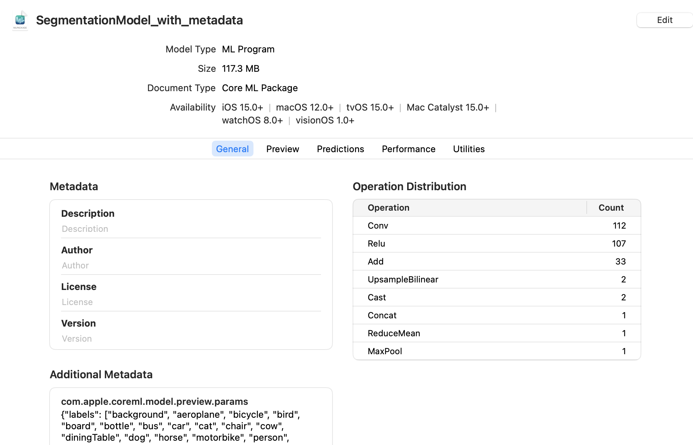
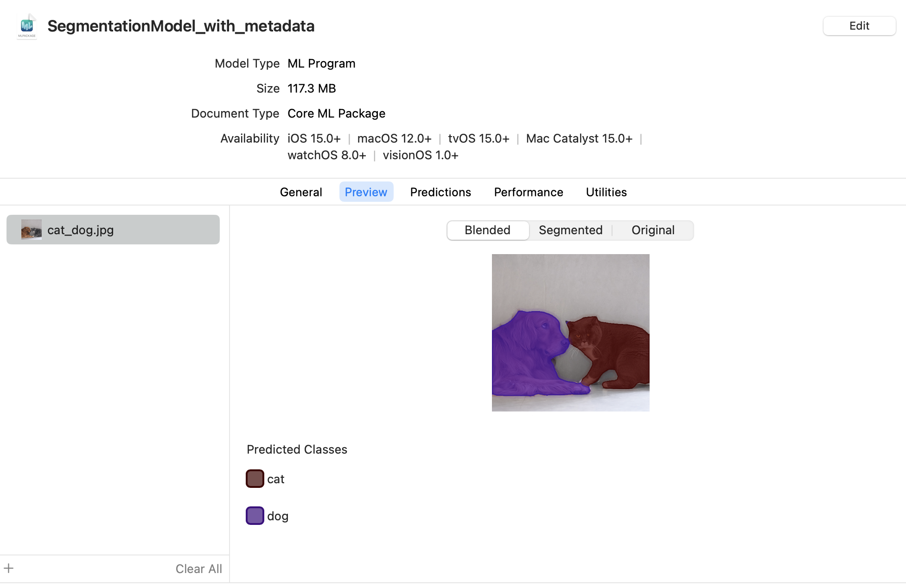
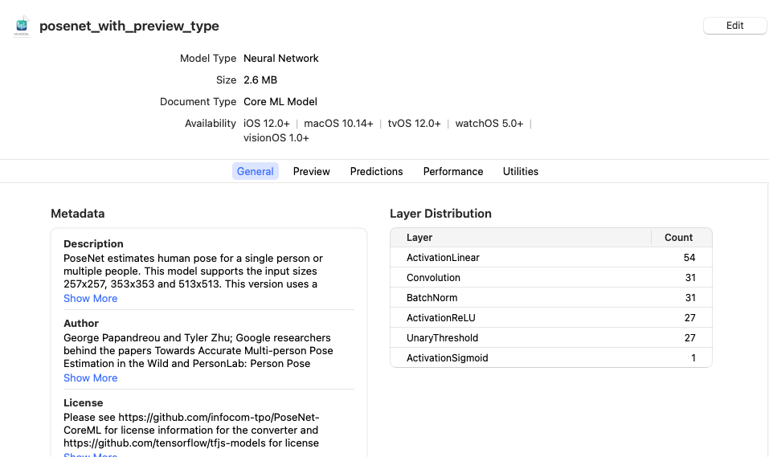
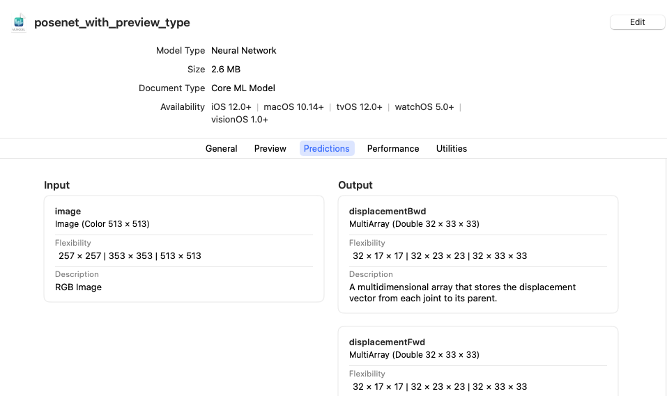
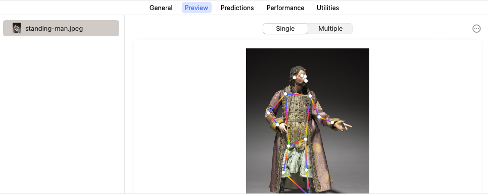

Xcode Model Preview Types#
After converting models to the Core ML format, you can set up the Xcode preview of certain models by adding preview metadata and parameters.
Overview#
The following table shows the types of models that work with the Xcode preview feature, and the preview metadata and parameters you need to provide.
Note
Some model architecture types, such as Neural Network Classifier, don’t require a model.preview.type, and some model preview types don’t require preview parameters.
Architecture/Preview type |
model.preview.type |
model.preview.parameters |
Input |
Output |
|---|---|---|---|---|
|
|
Image |
MultiArray |
|
|
MultiArray |
MultiArray |
||
|
|
Image |
MultiArray |
|
|
Image |
Dict, string |
||
Depth Estimation |
|
Image |
MultiArray |
For an example of previewing an Image Classifier, see Getting Started. For an example of previewing a BERT QA model, see Converting TensorFlow 2 BERT Transformer Models.
Segmentation Example#
The following example demonstrates how to add an Xcode preview for a segmentation model. Follow these steps:
Load the converted model.
Set up the parameters. This example collects them in
labels_json.Define the
model.preview.typemetadata as"imageSegmenter".Define the
model.preview.parametersaslabels_json.Save the model.
# load the model
mlmodel = ct.models.MLModel("SegmentationModel_no_metadata.mlpackage")
labels_json = {"labels": ["background", "aeroplane", "bicycle", "bird", "board", "bottle", "bus", "car", "cat", "chair", "cow", "diningTable", "dog", "horse", "motorbike", "person", "pottedPlant", "sheep", "sofa", "train", "tvOrMonitor"]}
mlmodel.user_defined_metadata["com.apple.coreml.model.preview.type"] = "imageSegmenter"
mlmodel.user_defined_metadata['com.apple.coreml.model.preview.params'] = json.dumps(labels_json)
mlmodel.save("SegmentationModel_with_metadata.mlpackage")
Note
For the full code to convert the model, see Converting a PyTorch Segmentation Model.
Open the Model in Xcode#
To launch Xcode and open the model information pane, double-click the saved SegmentationModel_with_metadata.mlmodel file in the Mac Finder.

Click the Predictions tab to see the model’s input and output.

Preview the Model in Xcode#
To preview the model’s output for a given input, follow these steps:
Note
The preview for a segmentation model is available in Xcode 12.3 or newer.
Click the Preview tab.
Drag an image into the image well on the left side of the model preview. The result appears in the preview pane:


Note
For the full code to convert the model, see Converting a PyTorch Segmentation Model.
Body Pose Example#
You can add an Xcode preview to the PoseNet body pose model by defining the model.preview.type metadata as "poseEstimation", and providing the preview parameters for {"width_multiplier": FLOAT, "output_stride": INT}.
Click Download on the PoseNet page to retrieve the DetectingHumanBodyPosesInAnImage folder that contains the neural network (mlmodel file), and then use the following code to add the preview type and parameters:
import json
import coremltools as ct
# Load model
model = ct.models.MLModel("DetectingHumanBodyPosesInAnImage/PoseFinder/Model/PoseNetMobileNet075S16FP16.mlmodel")
model.user_defined_metadata["com.apple.coreml.model.preview.type"] = "poseEstimation"
params_json = {"width_multiplier": 1.0, "output_stride": 16}
model.user_defined_metadata['com.apple.coreml.model.preview.params'] = json.dumps(params_json)
model.save("posenet_with_preview_type.mlmodel")
Learn more about the preview parameters in posenet_model.ts in Pre-trained TensorFlow.js models on GitHub.
Open the Model in Xcode#
Double-click the posenet_with_preview_type.mlmodel file in the Mac Finder to launch Xcode and open the model information pane:

Click the Predictions tab to see the model’s input and output.

Preview the Model in Xcode#
To preview the model’s output for a given input, follow these steps using the following sample image:

Right-click and choose Save Image to download this test image. (“Figure from a Crèche: Standing Man” is in the public domain, available from creativecommons.org.)#
Download the sample image.
Click the Preview tab.
Drag the sample image into the image well on the left side of the model preview.
The result appears in the preview pane:

The result shows a single pose estimation (the key points of the body pose) under the Single tab, and estimates of multiple poses under the Multiple tab.